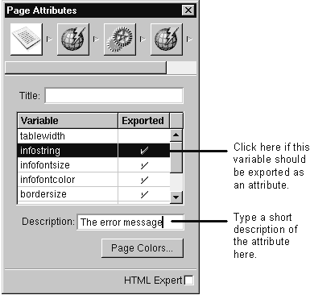
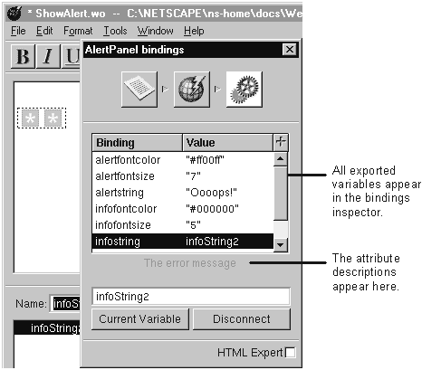

Table of Contents
Table of Contents
Create the component either inside an application or outside of an application by choosing File->New.
Write the component's HTML and script the same way you normally do.
Open the component's page inspector. (Click the inspector button to bring up the inspector window.)
Click the "Exported" field for each variable that the parent component should bind to.
Type brief documentation for each exported variable in the Description field.

In WebObjects Builder, a reusable component is simply a component that exports it variables. Other than that, there's no difference between creating a component to be reused and creating a component that's used only once. See "Reusing Components" to learn how to use a component that has been created for reuse.
When you use one component (the child component) inside of another component (the parent component), the child component is treated as a dynamic element. Like most dynamic elements, the child component may have attributes that the parent component should bind to variables or methods from the parent's script. To make such a binding possible in WebObjects Builder, you must be able to see the child component's attributes in the bindings inspector when you inspect it from the parent component.
You set up the attributes in the child component's page inspector. The page inspector lists all of the component's variables. Click "Exported" for each variable that should be considered an "attribute," that is, that the parent component might want to bind a variable or method to. When you do this, you'll see the following when you inspect the child component.

If you don't export a variable, the child component has total control over that variable's value. It's for internal use only. Even if a component variable is exported, it's a good idea to initialize it to some default value in the child's init method so that the application doesn't fail if the parent doesn't provide a value.
The chapter "Creating Reusable Components" in the WebObjects Developer's Guide tells you how to design a component so that it can be reused easily. In addition, read "Reusable Component Limitations" (in this guide) to learn about some important limitations when you use WebObjects Builder to create a reusable component.
 Next Section
Next Section